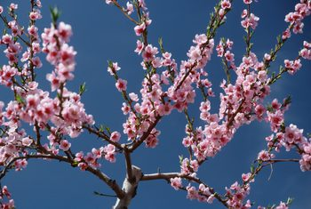
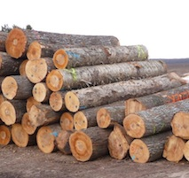

| The bolsooom branches are beautiful with coulorful flowers. They docorate the environment elegently. |  |
Visit blosoom pictures |
| Timber logs are piled up for further processsing. |  |
Check Timber Zone |
| Spring branches are awesome looking. |  |
Eye catching spring green |